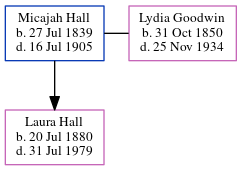

Micajah Hall 1839 - 1905
[ Home ] | [ Calendar ] | [ Surnames Index ] | [ Census Index ] | [ Family History ]Micajah Hall was born in Pendleton, Anderson, South Carolina, USA on Jul 27, 18391 and had 1 child with Lydia Ann Missouri Goodwin: Laura. In 1900, he was living in Militia District, Black Hall (Part, Excl. Atlanta City), Fulton, Georgia1.
He died on Jul 16, 1905 in Atlanta, Fulton, Georgia, USA.
Children
- Laura was born on Jul 20, 1880
Citations
- 1900 United States Federal Census Online publication - Provo, UT, USA: MyFamily.com, Inc., 2004.Original data - United States of America, Bureau of the Census. Twelfth Census of the United States, 1900. Washington, D.C.: National Archives and Records Administration, 1900. T623, 1854 rolls.
Family Tree
Generated by ged2site. Last updated on Jun 6, 2024